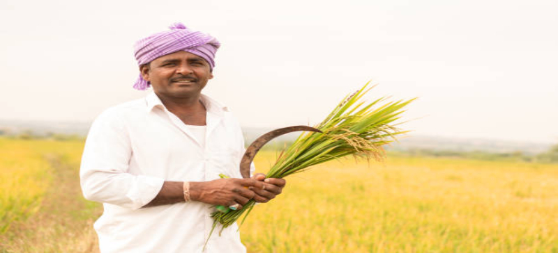
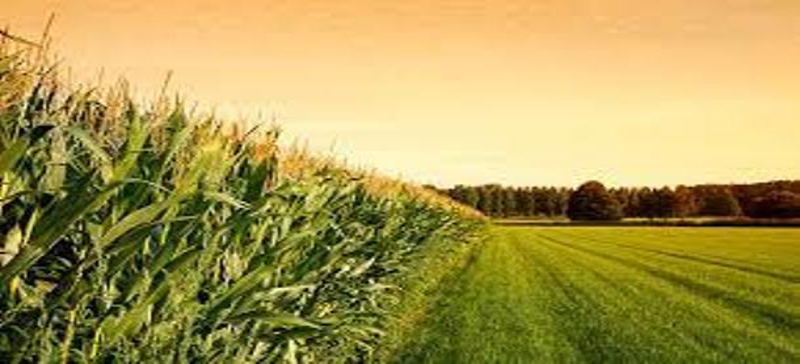
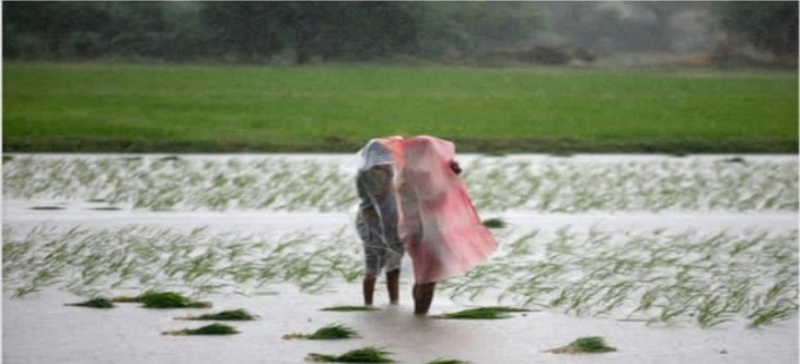
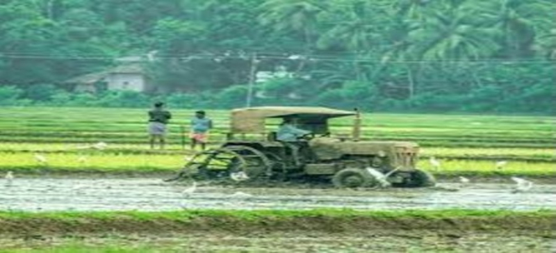

1 / 8

1
2 / 8

2
3 / 8

3
4 / 8

4
5 / 8

5
6 / 8

6
7 / 8

7
8 / 8

8


Population is increasing; land is decreasing, so it is very necessary to increase productivity of crops. Currently agriculture contributes roughly 17% of India's GDP which was 43% in 1970. In last 10 years, agricultural growth has been approximately 1.5% while India's GDP has grown over 7%. Abate the unending struggles of farmers in India, the government has time to time brought many institutional as well as technological reforms to help the farmers, providing various schemes and funding to farmers Government interferes in everything right from buying seeds and fertilizers to selling it in the market. Massive amounts of public money are spent in subsidies, all the schemes are running in our country but the problem is that these schemes are not reached to every farmer.
So we have to adopt better methodology to spread these schemes so that farmers can get their every right and can live a better life. There are number of websites, SMS services, and Agriculture centers available for agricultural news. Websites for farmers that'll give them practical advice on pesticides, fertilizers, soil types and easy ways to identify crop diseases, in all Indian languages. There are several websites that can be helpful for farmers in India. We are bringing all necessary information relating to agriculture and dairy farms in one place to give awareness to farmers about new emerging technologies and method.
Following Information are provided to farmers through this website.
1. Crop Insurance
2. Best market opportunities
3. High yielding variety of seeds subsidized by Govt.
4. About soil testing, natural fertilizers and hazards of chemical fertilizers, insecticides etc
5. Teaching them the new farming techniques and use new advance tools
6. Educating them for mixed farming techniques
7. About weather forecasting, changing climate, effects of deforestation etc.
8. New method of irrigation like drop farming
9. Food storage warehouses
10.Various bank schemes of easy loans and low interest rates